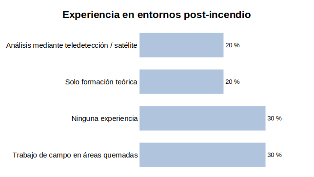
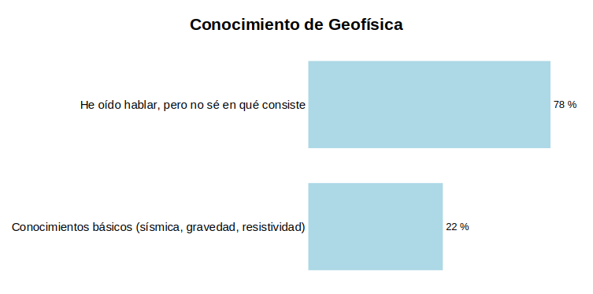
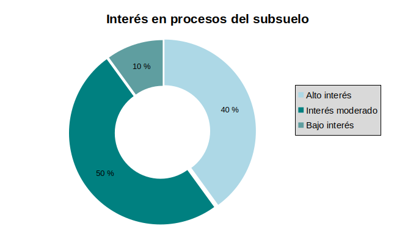
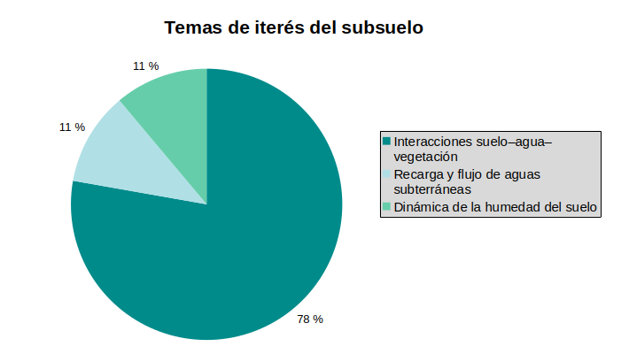
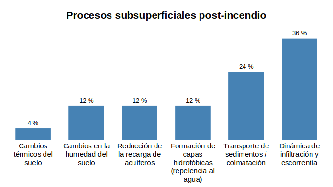
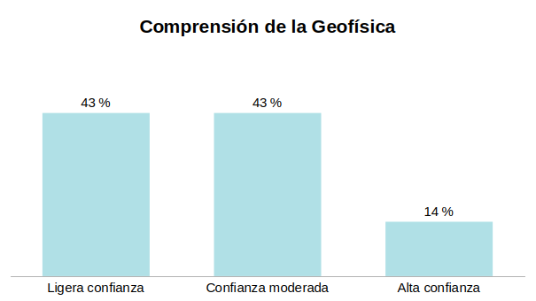
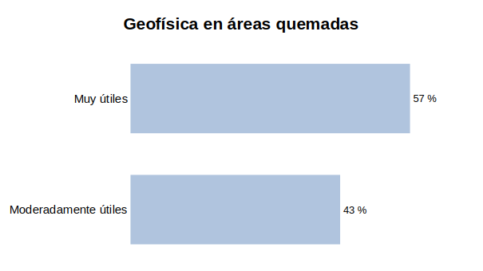
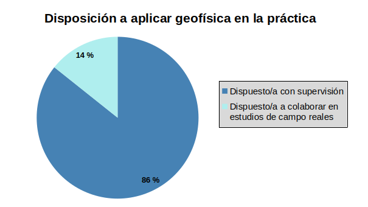
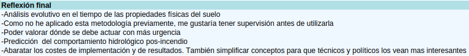

📊 Encuesta participantes Microcredencial en IA y Tecnologías Geoespaciales para la Restauración de Ecosistemas Forestales
by Benjamin Mary | 2026/10/01
Al finalizar la Microcredencial, los participantes completaron una serie de encuestas para conocer la percepción y el conocimiento de sobre la Geofísica Aplicada para la Restauración de Ecosistemas Forestales Afectados por Incendios.
🌱 ANTES DE LA MICROCREDENCIAL
En primer lugar, se hicieron unas preguntas relativas a la experiencia y conocimiento previo a la realización de la Microcredencial.
Experiencia en entornos Post-Incendio
Los participantes muestran un perfil muy equilibrado entre la teoría y la práctica. Destaca que la mitad de los encuestados que sí tienen experiencia previa se divide a partes iguales entre el trabajo de campo directo sobre el terreno y el uso de herramientas tecnológicas como la teledetección por satélite.

Conocimiento de Geofísica
Existe un claro nicho de divulgación en esta materia. La gran mayoría de los encuestados conoce el término pero admite no saber exactamente en qué consiste, dejando a una pequeña minoría con nociones sobre técnicas específicas como la sísmica o la resistividad.

Interés en Procesos del Subsuelo
El interés por comprender lo que ocurre bajo la superficie es masivo. Casi la totalidad de los participantes muestran una actitud muy positiva hacia esta temática, concentrándose las respuestas en niveles de interés moderado y alto.

Temas de Interés en Procesos del Subsuelo
Hay un claro protagonista en las preferencias de la audiencia: las interacciones entre el suelo, el agua y la vegetación acaparan la gran mayoría de la atención, dejando en un segundo plano pero empatados el estudio de la humedad del suelo y la recarga de acuíferos.

Procesos Subsuperficiales Post-Incendio
Tras un incendio, las principales preocupaciones de los encuestados se centran en el agua y la erosión. La dinámica de infiltración y escorrentía, seguida de cerca por el transporte de sedimentos, son identificados como los fenómenos más críticos a evaluar en el subsuelo.

🧑🔬 DESPUÉS DE LA MICROCREDENCIAL (EXPECTATIVAS / PERCEPCIÓN DE APRENDIZAJE)
A continuación, se realizaron preguntas relativas a los intereses y conocimientos tras la realización de la Microcredencial.
Comprensión de la geofísica
El nivel de seguridad de los participantes al asimilar estos conceptos es intermedio. La gran mayoría se divide a partes iguales entre quienes sienten una ligera confianza y quienes muestran una confianza moderada, reflejando que, aunque entienden las bases, aún queda margen para afianzar el conocimiento antes de dar el salto a una seguridad alta.

Geofísica en áreas quemadas
Existe un consenso unánime y muy positivo sobre el valor de esta disciplina en entornos afectados por el fuego. Absolutamente todos los participantes consideran que las herramientas geofísicas aportan valor para estudiar zonas incendiadas, dividiéndose las opiniones únicamente entre quienes las ven muy útiles o moderadamente útiles.

Disposición a aplicar geofísica en la práctica
La actitud hacia la acción es totalmente proactiva y participativa. La inmensa mayoría de los encuestados afirma estar dispuesta a aplicar estos métodos bajo supervisión, mientras que un grupo más reducido prefiere dar el paso directamente colaborando de forma activa en estudios de campo reales.

Reflexión final
Por último, se realizó una pregunta como reflexión final, ¿Qué aspecto de la geofísica en entornos post-incendio crees que será más desafiante? Estas fueron las respuestas:
